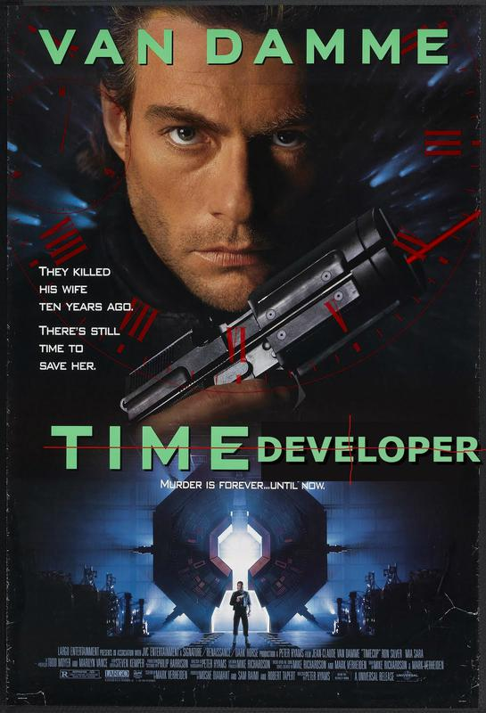

Or, Raspbian <3's Ansible.
Since HZeller took care the Flaschen Taschen software, most of my code on this project was geared toward deployment and tweaks to the original Flaschen Taschen libraries, to make them work in our configuration. Since this project had a sharp deadline, my goal was to remove as much uncertainty as possible. Thats why I wrote some Ansible setup scripts, to avoid...
Problems I've Had In The Past Writing Code for Raspberry Pi:
- When an rpi winds up unbootable and needs wiped: "argh, how did I have that configured?"
- Where do I actually write the code? On the Pi itself, or on my laptop?
- If on my laptop: okay so am I pushing my changes to github, SSHing the pi, pulling those changes, and recompiling?
- If on the pi: cool but this is Raspbian Lite so there's no IDEs, and I'm trash at Vim. So is Nano the answer?
- No RTC on the rpi, so it loses time when unpowered, and it relies on the internet to correct it's clock.
- Etc.
The repo for my Ansible scripts can be found here. They're pretty simple at the moment, since they are just aimed at taking care of repetitive tasks. I'll break down how they address each item in the "Problems I've Had" list:
When an rpi winds up unbootable and needs wiped...
That's exactly what all those tasks with the tag "basics" are all about. Once you've enabled SSH on your RPi (which needs to be done with monitor/mouse/keyboard), run:
ansible-playbook main.yml --tags basics --ask-pass.
You will be asked to enter the RPi's password, then it will:
- Copy your ssh key(s) over to the pi, so you don't have to keep typing in your password to connect to it.
- Run
sudo apt updateandsudo apt upgradeon the pi. - Install whatever packages are needed (from a list near the top of the .yml file).
- Change the shell to Fish, a shell I like using.
There are additional tasks tagged "network" to configure some things on the pi to be a little more easily accessible. For instance, we do some hostname and hostfile tweaks, so I don't have to type a bunch of IP addresses into my terminal. I am also turning off wifi since this project uses ethernet to connect the pis to eachother. To do all that, just type this badboy in:
ansible-playbook main.yml --tags network
Where do I actually write the code..?
On your laptop. Use whichever text editor you normally use, save your work, then run this on your dev machine:
ansible-playbook main.yml --tags code
This does all tasks with the tag "code" on every computer in the inventory file. That includes:
- Synchronize the clock to that on my dev machine.
- Get all the changes I have made to the code on my dev machine, except git files.
- Recompile the Flaschen-Taschen server code
- Recompile the Flaschen-Taschen client code
Once that's all done, it restarts the Flaschen-Taschen server and it's time to test whatever changes I made. My go-to for this was usually running one of cgorringe's super cool demos against my newly updated server.
No RTC on the RPi...
This is why we synchronize the clock in our "code" tasks. I think this normally isn't a problem for most RPi projects but since mine is not internet connected, it's something I need to deal with. Since the Raspberry Pi doesn't have a device to keep time while it's unpowered, they lose however many hours they are unpowered for. This becomes a problem when you are trying to compile C++ code on the pi. Here's basically what happens:
- You turn your RPi off for 3 hours, for whatever reason, at 4:00.
- You turn it back on at 6:00.
- The RPi boots up. Since it can't go online and update it's clock, it continues to think the time is 3:00.
- You write some code on your dev machine, push it to the pi with Ansible, and attempt to compile it at 6:20.
- The RPi sees 6:20 in the "time modified" of the files.
- Since the RPi is pretty sure the time is 3:20, it says "how can I compile that? It was edited in the future!"
- Compilation fails with a cryptic message that you have to read through Ansible's terminal output, which kind of sucks.
To be clear, I am better at interpreted languages like Python and Javascript, so I'm sure there's a much better way of dealing with this error. But brought it up because I thought it was kind of funny, and this is how I dealt with it.
Maybe one day if we are lucky we will get a C++ compiler that can compile code written in the future?

Or maybe that's not such a great idea.